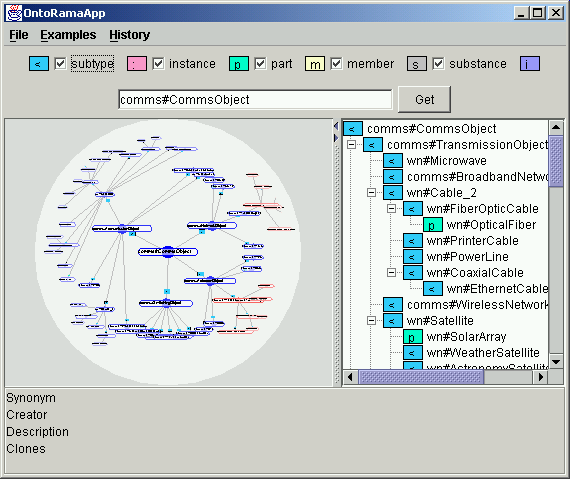

OntoRama
OntoRama is a prototype Ontology Browser.
In order to use this application you will need to download Java Webstart . Once Webstart is installed - you are ready to launch OntoRama
Here is screenshot of the program:
